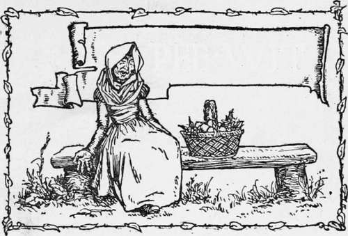
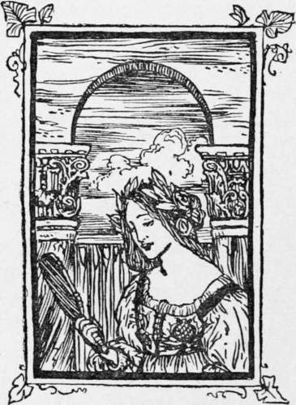

Pee-Wit
Description
This section is from the book "Household Tales by Brothers Grimm", by Brothers Grimm. Also available from Amazon: Household Tales by Brothers Grimm.
Pee-Wit
A poor countryman, whose name was Pee-wit, lived with his wife in a very quiet way, in the parish where he was born. One day as he was ploughing with his two oxen in the field, he heard all on a sudden some one calling out his name. Turning round, he saw nothing but a bird that kept crying "Pee-wit! Peewit !" Now this poor bird is called a Pee-wit, and, like the cuckoo, always keeps crying out its own name. But the countryman thought it was mocking him, so he took up a huge stone and threw at it. The bird flew off safe and sound; but the stone fell upon the head of one of the oxen, and killed him upon the spot. "What can one do with an odd one?" thought Pee-wit to himself as he looked at the ox that was left; so without more ado he killed him too, skinned them both, and set out for the neighbouring town to sell the hides to the tanner for as much as he could get.
He soon found out where the tanner lived, and knocked at the door. Before, however, the door was opened, he saw through the window that the tanner's daughter was hiding in an old chest a friend of hers, whom she seemed to wish that no one should see. By and by the door was opened. " What do you want ?" said the daughter. Then Pee-wit told her he wanted to sell his hides; and it came out that the tanner was not at home, and that no one there ever made bargains but himself. The countryman said he would sell cheap, and did not mind giving his hides for the old chest in the corner; meaning the one he had seen the young woman's friend get into.
Of course the maiden would not agree to this ; and they went on talking the matter over so long, that at last in came the tanner, and asked what it was all about. Pee-wit told him the whole story, and asked whether he would give him the old chest for the hides. "To be sure I will," said he; and scolded his daughter for saying nay to such a bargain, which she ought to have been glad to make, if the countryman was willing. Then up he took the chest on his shoulders, and all the tanner's daughter could say mattered nothing; away it went into the countryman's cart, and off he drove. But when they had gone some way, the young man within began to make himself heard, and to beg and pray to be let out. Pee-wit, however, was not so soon to be brought over; but at last after a long parley, a thousand dollars were bid and taken; the money was paid, and at that price the poor fellow was set free, and went about his business.
Then Pee-wit went home very happy, and built a new house, and seemed so rich that his neighbours wondered and said, "Pee-wit must have been where the golden snow falls." So they took him before the next justice of the peace, to give an account of himself and show that he came honestly by his wealth; and then he told them that he had sold his hides for one thousand dollars. When they heard it, they all killed their oxen, that they might sell the hides to the same tanner; but the justice said, "My maid shall have the first chance"; so off she went: but when she came to the tanner, he laughed at them all for a parcel of noodles, and said he had given their neighbour nothing but an old chest.
At this they were all very angry, and laid their heads together to work him some mischief, which they thought they could do while he was digging in his garden. All this, however, came to the ears of the countryman, who was plagued with a sad scold for his wife ; and he thought to himself, "If any one is to come into trouble, I don't see why it should not be my wife rather than Pee-wit"; so he told her that he wished she would humour him in a whim he had taken into his head, and would put on his clothes and dig the garden in his stead.
The wife did what was asked, and next morning began digging. But soon came some of the neighbours, and, thinking it was Pee-wit, threw a stone at her,—harder, perhaps, than they meant,—and killed her at once. Poor Pee-wit was rather sorry at this; but still he thought that he had had a lucky escape for himself, and that perhaps he might, after all, turn the death of his wife to some account: so he dressed her in her own clothes, put a basket with fine fruit (which was now scarce, it being winter) into her hand, and set her by the road-side, on a broad bench. After a while came by a fine coach with six horses, servants, and outriders, and within sat a noble lord, who lived not far off. When his lordship saw the beautiful fruit, he sent one of the servants to the woman, to ask what was the price of her goods. The man went and asked, " What is the price of this fruit ?" No answer. He asked again. No answer. And when this had happened three times, he became angry, and, thinking she was asleep, gave her a box on the ear, when down she fell backwards into the pond that was behind the seat. Then up ran Pee-wit, and cried out and sorrowed, because they had drowned his poor dear wife; and threatened to have the lord and his servants tried for what they had done. His lordship begged him to be easy, and offered to give him the coach and horses, servants and all; so the countryman, after a long time, let himself be appeased a little, took what they gave, got into the coach, and set off towards his own home again.
As he came near, the neighbours wondered much at the beautiful coach and horses, and still more when they stopped and Pee-wit got out at his own door. Then he told them the whole story, which only vexed them still more; so they took him and fastened him up in a tub, and were going to throw him into the lake that was hard by. But whilst they were rolling the tub on before them towards the water they passed by an alehouse, and stopped to refresh themselves a little before they put an end to Pee-wit. Meantime they tied the tub fast to a tree, and there left it while they were enjoying themselves within doors.
Pee-wit no sooner found himself alone, than he began to turn over in his mind how he could get free. He listened, and soon heard, Ba, ba! from a flock of sheep and lambs that were coming by. Then he lifted up his voice, and shouted out, " I will not be burgomaster, I say; I will not be made burgomaster." The shepherd hearing this went up and said, "What is all this noise about?" "Oh!" said Pee-wit, "my neighbours will make me burgomaster against my will; and when I told them I would not agree, they put me into this cask, and are going to throw me into the lake." " I should like very well to be burgomaster, if I were you," said the shepherd. " Open the cask, then," said the other, " and let me out, and get in yourself, and they will make you burgomaster instead of me." No sooner said than done ; the shepherd was in, Pee-wit was out: and as there was nobody to take care of the shepherd's flock, Pee-wit drove it off merrily towards his own house.
When the neighbours came out of the alehouse they rolled the cask on, and the shepherd began to cry out, "I will be burgomaster now; I will be burgomaster now." "I dare say you will, but you shall take a swim first," said a neighbour, as he gave the cask the last push over into the lake. This done, away they went home merrily, leaving the shepherd to get out as well as he could.
But as they came in at one side of the village, who should they meet coming in by the other way but Pee-wit, driving a fine flock of sheep and lambs before him! "How came you here?" cried all with one voice. "Oh! the lake is enchanted," said he; " when you threw me in I sunk deep and deep into the water, till at last I came to the bottom; there I knocked out the bottom of the cask, and then I found myself in a beautiful meadow, with fine flocks grazing upon it; so I chose a few for myself, and here I am." "Cannot we have some too?" said they. " Why not ? there are hundreds and thousands left; you have nothing to do but to jump in, and fetch them out."
So they all agreed they would dive for sheep; the justice first, then his clerk, then the constables, and then the rest of the parish one after the other. When they came to the side of the lake, the blue sky was covered over with little white clouds, like flocks of sheep, and all were reflected in the clear water: so they called out, "There they are! there they are already!" and fearing lest the justice should get everything, they jumped in all at once; but Pee-wit jogged home, and made himself happy with what he had got, leaving his neighbours to find flocks for themselves as well as they could.

Continue to:
Tags
fairy tales, children's stories, brothers grimm, household tales